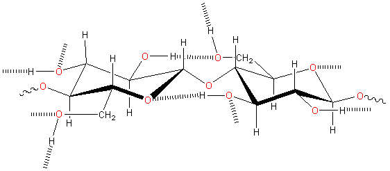

Cotton plant
Cellulose is a water-binding agent.
Cellulose is a prominent scaffolding polysaccharide found in plants as microfibrils (2-20 nm diameter and 100 - 40 000 nm long) [1598] . These form the structurally strong framework in the cell walls. Cellulose (E460) is mainly prepared from wood pulp. Cellulose is also produced in a highly hydrated form by some bacteria (for example, Acetobacter xylinum). The production of colloidal celluloses and their applications in the food industry has been reviewed [4357].
Cellulose structure showing the β-(1 4)-D-glucopyranose repeat unit
4)-D-glucopyranose repeat unit
Cellulose is a linear polymer of β-(1 4)-D-glucopyranose
units in 4C1 conformation (although often erroneously given as a polymer of cellobiose [3098]). The fully equatorial conformation of β-linked
glucopyranose residues stabilizes the chair structure, and minimizies
its flexibility. This is in contrast to the slightly more flexible α-linked glucopyranose residues in amylose.
Cellulose preparations may contain trace amounts (≈ 0.3%) of arabinoxylans.a [Back to Top
4)-D-glucopyranose
units in 4C1 conformation (although often erroneously given as a polymer of cellobiose [3098]). The fully equatorial conformation of β-linked
glucopyranose residues stabilizes the chair structure, and minimizies
its flexibility. This is in contrast to the slightly more flexible α-linked glucopyranose residues in amylose.
Cellulose preparations may contain trace amounts (≈ 0.3%) of arabinoxylans.a [Back to Top  ]
]
Cellulose is an insoluble molecule consisting of about 1000 or so residues, with processed or crystalline preparations being somewhat shorter. There are four crystalline forms, Iα, Iβ, II, and III.
Cellulose; data from [2552] |
Weight-averaged number of residues | water content; moles/mole glucose |
| Iβ, | 430 | 0.46 |
| II | 740 | 0.89 |
| III | 290 | 0.86 |
The stabilities of these crystalline forms are similar(<10 J ˣ g−1 ) and may depend on the temperature. Cellulose I is the least stable [2552]. It forms crystals (cellulose Iα)
where intra-molecular (3O-H O5
and 6O
O5
and 6O H-O2) and intra-strand
(6O-H
H-O2) and intra-strand
(6O-H O3) hydrogen bonds hold
the network flat allowing the more hydrophobic ribbon faces
to stack. Weak 6C-H
O3) hydrogen bonds hold
the network flat allowing the more hydrophobic ribbon faces
to stack. Weak 6C-H O2hydrogen bonds may also make some contribution to the crystal stability. Each residue is oriented 180° to the subsequent one, with
the chain synthesized two residues at a time. Individual
strands of cellulose are intrinsically no less hydrophilic,
nor more hydrophobic, than some other soluble polysaccharides
such as amylose. This tendency to
form crystals utilizing extensive hydrophobic interactions [1645], in addition to intramolecular and intermolecular
hydrogen-bonding, makes cellulose insoluble in the usual aqueous
solutions.
O2hydrogen bonds may also make some contribution to the crystal stability. Each residue is oriented 180° to the subsequent one, with
the chain synthesized two residues at a time. Individual
strands of cellulose are intrinsically no less hydrophilic,
nor more hydrophobic, than some other soluble polysaccharides
such as amylose. This tendency to
form crystals utilizing extensive hydrophobic interactions [1645], in addition to intramolecular and intermolecular
hydrogen-bonding, makes cellulose insoluble in the usual aqueous
solutions.
N-Methylmorpholine-N-oxide
It is, however, soluble in more exotic solvents [2055, 2905] such as aqueous
N-methylmorpholine-N-oxide (NMNO, ≈ 0.8 mol water/mol, then up to 30% by wt cellulose at 100 °C [1060]) [2938], CdO/ethylene-diamine (cadoxen), LiCl/N,N'-dimethyl-acetamide, concentrated NaOH [2497], near-supercritical water [1070], molten salt hydrate (CaCl2.6H2O-LiCl , 120 °C, [4327]), dimethyl sulfoxide (DMSO)/diazabicyclo [5.4.0]-undec-7-ene (DBU)/CO2 ionic/nonionic switchable solvent system [4376], or aqueous tetrabutyl-ammonium hydroxide [3027]). Cellulose partially ionizes and swells in concentrated sodium hydroxide solutions that also cause a small amount of dissolution [3017]. We believe that water molecules catalyze the formation of the natural cellulose crystals by helping to align the chains through the hydrogen-bonded bridging. At the interface with water, the intra-chain and inter-chain hydrogen-bonding break up the hydrophobic surface. These surfaces do not behave like macroscopic hydrophobic planes but more like hydrophobic strips like fatty acid chains [2269]. Water is excluded, however, from the region between the interior hydrophobic surfaces.
Crystalline cellulose Iβ and cellulose II both show a negative value for Poisson’s ratio (ν, the signed ratio of transverse strain to axial strain, also known as auxetic behavior), where there is a transverse expansion upon axial stretching of the material. Due to the presence of inter-chain hydrogen-bonding, twisting seems to be the cause of this perpendicular expansion [2825].
We show the hydrogen bond linkages in cellulose below. Donated hydrogen bonds from HO(2) and HO(6) hydroxyl groups to receptor oxygen atoms O6 and O3 respectively can exchange with water. Still, the HO(3) groups exclusively donate to the intra-chain neighboring O(5) and do not exchange with local water molecules, if present [2717].
Inter and intra-molecular hydrogen-bonding links in cellulose

Part of cellulose preparations are amorphous between these crystalline sections. The overall structure is aggregated particles with extensive pores capable of holding relatively large amounts of water by capillarity. The natural crystal is made up of metastable Cellulose I with all the cellulose strands parallel and no inter-sheet hydrogen-bonding. This cellulose I (that is, natural cellulose) contains two coexisting phases cellulose Iα (triclinic) and cellulose Iβ (monoclinic) in varying proportions dependent on its origin. Iα is found more in algae and bacteria while Iβ is the commonly found form in higher plants.
The two conformationally distinct cellulose layers in cellulose 1b
Cellulose Iα and cellulose Iβ have the same fiber repeat distance (1.043 nm for the repeat dimer interior to the crystal, 1.029 nm on the surface [721]) but differing relative displacements of the sheets. Cellulose Iα consists of identical chains with two alternating glucose conformers as-A-B-. Cellulose Iβ consists of two conformationally distinct alternating sheets, as shown right, where the 2-OH and 6-OH groups change orientations and alter the hydrogen-bonding pattern. The adjacent sheets of cellulose Iα are regularly displaced from each other in the same direction. This differs from sheets of cellulose Iβ, with each made up of crystallographically identical glucose conformers, which are staggered [559]. Density functional theory calculations using cluster models have shown that the interchain stabilizations of the Iβ model were ≈ 40 kJ ˣ (mol glucose)−1 and ≈ 30 kJ ˣ (mol glucose)−1 within the hydrogen-bonded layers and between the layers, respectively [3154]. Cellulose (Iβ) significantly alters the water structuring at its surface out to about 10 Å, which may affect its enzymatic digestion [905].
Cellulose Iα and cellulose Iβ interconvert by bending during microfibril formation [418]. Metastable cellulose Iα converts to cellulose Iβ upon annealing.
Interactive structures are available (Jmol).
If recrystallized (for example, from a base or liquid CS2) cellulose I gives the thermodynamically more stable monoclinic cellulose II structure with an antiparallel arrangement of the strands, plus intermolecular, intra-sheet, and inter-sheet hydrogen-bonding.
Cellulose II crystal, from [2039]
This crystalline form of cellulose II, shown left, may also be prepared by deacetylation of cellulose acetate [2039]. Cellulose II contains two different types of anhydroglucose (A and B) with distinct backbone structures; the chains consisting of -A-A- or -B-B- repeat units [627], shown alternating from the top in the x-axis view. Both have intra-chain hydrogen-bonding, but only the -A-A- one has inter-chain hydrogen-bonding. There are also hydrogen bonds between the A and B sheets such that an additional sheet structure consists of alternant A and B strands, with these sheets joined by hydrogen bonds, shown as diagonal sheets in the z-axis view. In the x-axis view, the cellulose molecules go across the picture (6 molecules shown), whereas in the z-axis view, they disappear into the cartoon (18 molecules shown).
The interactive structure of cellulose II is available (Jmol).
Cellulose II hydrate is prepared by immersion of mercerized cellulose II in anhydrous hydrazine, followed by washing with water [1736]. Its structure is similar to Cellulose II but has a larger unit cell containing the extra water molecules between the layers.
Microcrystalline cellulose gives needle-shaped nanocrystals (microfibrillated cellulose [1902]) of relatively uniform size with a length of 90 ± 50 nm and a width of 10 ± 4 nm [1690]. Cellulose III is formed from cellulose mercerized in ammonia and is similar to cellulose II but with parallel chains as in cellulose Iα and cellulose Iβ [753]. For a review of cellulose structure, see [288].
Alternative cellulose II and III structures have been suggested using molecular dynamics [2459]. The simulated neutron fiber diffraction pattern of cellulose III supported the new network, while cellulose II showed discrepancies with the reported experimental diffraction pattern.
There are two classes of water that associate with cellulose [3047]. One is bound water that does not freeze, and the other accumulates in the narrow spaces between the microfibrils. The bound water is associated closely with the cellulose surface and can diffuse within this environment above ≈ 220 K, forming a glass below this temperature. On the other hand, the water occupying the narrow spaces becomes mobile abruptly at ≈ 260 K [3047]. The relative amounts of each depend on the source of the cellulose.
Water at the microfibril interfaces enables the cellulose surface hydroxyls to experience favorable electrostatics, so lowering the total enthalpy and stabilizing the system [4465].
Microcrystalline cellulose (MCC) [3005] is a pure, partially depolymerized, α-cellulose made from many sources, including hardwood, softwood, and agricultural residues. Any amorphous cellulose present is destroyed in its preparation, using acid or enzymes, for example, leaving just the remaining crystalline cellulose. The cellulose particles are small (≈ 100 µ, with a surface area of about 100 m2 ˣ kg−1) and can form a colloidal suspension in excess water. Different samples from different sources and preparation methodologies show differences at the particle level [3003].
Although MCC does not dissolve in water, water strongly binds to the surface of its cellulose crystallites in saturated
water vapor [3002]. A solid hydrate shell may form at higher water contents that affect the trans-gauche to the trans-trans equilibrium of the surface hydroxymethyl groups [3002].
[Back to Top  ]
]
Cellulose has many uses as an anticaking agent, emulsifier, stabilizer, dispersing agent, thickener, and gelling agent. Still, these are generally subsidiary to its most important purpose of binding to the water. Microcrystalline cellulose is among the most commonly used cellulose derivatives in the food industry [3004]. It is an often-used excipient due to its exceptional binding and tableting properties, characterized by its plasticity and cohesiveness when wet. Water cannot penetrate crystalline cellulose, but dry amorphous cellulose absorbs water becoming soft and flexible. Some of this water is non-freezing, but most is entrapped. If the cellulose has high crystallinity, then less water is bound by direct hydrogen bonding. However, some fibrous cellulose products can hold onto considerable water in pores with their typically straw-like cavities. The water-holding ability correlates well with the amorphous (surface area effect) and void fraction (porosity). As such water may be supercooled, this effect may protect against ice damage. Cellulose improves volume and texture, particularly as a fat replacement in sauces and dressings. However, its insolubility means that all products will be cloudy.
Swelled bacterial cellulose [4183] (ex. Acetobacter xylinum), in its never-dried state with much smaller fibrils (≈ 1%) than from plants, exhibits pseudo-plastic viscosity like xanthan gels. However, this viscosity is not lost at high temperatures, and low shear rates as the cellulose can retain its structure. It has an open three-dimensional network structure [3825], high mechanical strength, high crystallinity, high water-holding capacity, and high porosity. Where liquid water surrounds individual cellulose strands, the strands are flexible and do not present contiguous hydrophobic surfaces. Bacterial cells are removed by hot alkali, and the clean wet cellulose is used as a substrate for immobilizing biomolecules [843] or for covering wounds [844]. Its porous morphology makes a promising matrix for tissue culture. On drying, the bacterial celluloses (as those of other never-dried celluloses such as cotton [2242]) irreversibly lose their hydrating water, and their properties tend to those of plant celluloses.
About a third of the world's production of purified cellulose is used as the base material for some water-soluble derivatives with pre-designed and wide-ranging properties dependent on groups involved and the degree of derivatization (for an extensive review, see [287]). Derivatizing cellulose interferes with the orderly crystal-forming hydrogen-bonding described above so that even hydrophobic derivatives may increase the apparent solubility in water. Methyl-cellulose (E461) [231] (made by methylating about 30% of the hydroxyl groups) is thermogelling. it forms gels above a critical temperature due to hydrophobic interactions between high-substituted regions, and consequentially stabilized intermolecular hydrogen-bonding. Such gels break down on cooling like that causing the solubility minimum for nonpolar gases. Hydrophobic saccharides become less soluble as the temperature increases [187]. This property is useful in forming films as barriers to water loss, and for holding on to small gas bubbles.
Hydroxypropylmethylcellulose (HPMC, E464) has similar properties and uses to methyl-cellulose, but with added water interactions and surface activity [1292]. Both methyl-cellulose and HPMC are used in gluten-free bakery products as gluten substitutes. Hydroxypropyl-cellulose (E463) possesses good surface activity but does not gel as it forms open helical coils. It is a water-soluble thickener, emulsifier, and film-former often used in tablet coating. Another well-used derivative of cellulose is carboxymethylcellulose.
Interactive structures are available (Jmol). [Back to Top  ]
]
a Cellulose biosynthesis [1465] and breakdown [2620] have been reviewed. [Back]
Home | Site Index | Hydrocolloids | Polysaccharide hydration | hydrogen-bonding | LSBU | Top
This page was established in 2002 and last updated by Martin Chaplin on 29 June, 2022